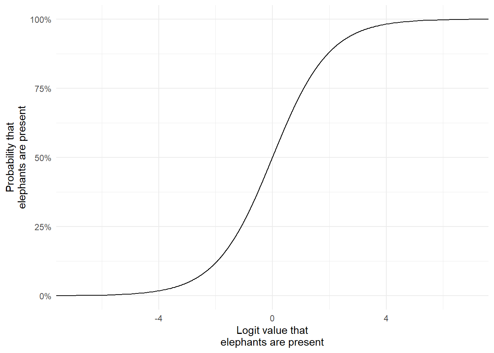
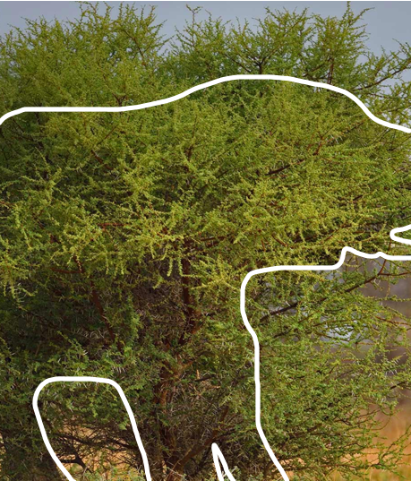

Where are species present and why are they present?
A fundamental question in ecology is; Where are species present, and why are they present there?
Zitong, in your case this may be; Why are roe deer present at site A but not site B? Is it because site A is closer to roads? If a site is close to a road what’s the probability roe deer are present? Is that very different to sites that are far away from a road?
What about features of the habitat? Are roe deer more likely if a site is forested versus agricultural?
Joe, in your case this may be; Why are pheasants present at site A but not site B? Is it related to how far away the nearest known release pen is? What does the relationship look like? If there is no relationship, what would that mean for policy?
What about the habitat makes pheasants more likely to occupy that site?
To act as motivation for this intro to occupancy models, let’s say we’re interested in understanding why are elephants present in the north of Etosha nature reserve in Namibia, but not in the south of the reserve? (As a side note, I’d recommend going there on holiday if you ever get the chance). Are elephants present in some parts of Etosha due to water availability? Is it related to food? Could predators play a role?
To find out, we needs stats. As useful as gut feelings and intuition are, it’s not enough. Remember, statistics is how we get the evidenceto answer our research question using data.
The best statistical tool available for answering these types of questions are “occupancy modeling”. These were originally developed by Daryl MacKenzie et al in 2002 who wanted to deal with a subtle issue when trying to find animals (more on this in a second). The broad concept underlying MacKenzie’s occupancy modelling framework built on ideas that had already been developed for estimating survivalofindividual animals, called the Cormack-Jolly-Seber, or CJS, model. As a cool note; Cormack and Jolly independently developed this model while they worked in Aberdeen University - a vital and internationally renowned model was developed right here in bloody Aberdeen! In my entire time as an undergradute student in Aberdeen no one ever told me this, even though I was using these models during my PhD! I only found out when I was at a conference in France. We, as a school, should be far more proud of this than we are.
The problem that occupancy models solve is subtle but insanely crucial.
Assume I want to determine where elephants are present in Etosha nature reserve in Namibia. I need data to answer this, so I decide to do ten elephant surveys in Etosha. Specifically, I go to visit these ten sites that are nicely spread throughout the park. At each site, whenever I spot an elephant I note down that elephants are present at that location. When I don’t see any elephants I record that elephants are absent at that location. Simple, right?
My data set for these ten sites and surveys might look something like:
The only thing to note here is that when elephants is 1, then that means I saw them at that site. When elephants is 0, then I didn’t see them. 1 means Present, 0 means Absent (at least for now).
To figure out the average probability that any one of my ten sites are occupied, I can run a Bernoulli Generalised Linear Model. The Bernoulli distribution (named after Jacob Bernoulli) is a type of distribution that will generate (or expect) values of 1 or 0; perfect here because our data can only be 1 or 0.
The model would be:
\[
y_i \sim Bernoulli(p_i) \\
\]
\[
logit(p_i) = \beta_0
\]
Let’s go through these equations slowly:
\(y\) is our observation (elephants in the etosha dataset)
\(i\) is the index, here being which site the data was collected from
\(\sim\) means “generated according to” (or “our data is the same as would be generated by the following distribution”)
\(Bernoulli\) is a type of distribution that will generate either 0 or 1
\(p\) is the probability of success (i.e. there is \(p\) probability that we see an elephant). We can’t possibly know what \(p\) is when we collect the data, so we need to figure it out with statistics. (The \(i\) means each site could have a different probability - but we’re not doing that yet)
\(\beta_0\) is the intercept which here, given we have nothing else in this part of the model, means the average probability to see an elephant.
\(logit\) is the link function to ensure that \(p\) remains between 0% and 100%. Specifically, it’s a little bit of maths: \(log(\frac{p}{1-p})\), which is the natural log of the probability to succeed (\(p\)) divided by the probability to fail (\(1-p\)).
To get a sense of how the \(logit\) link function works, here’s a figure where the different potential probability that elephants are present is on the y-axis. Remember, we don’t know what this probability is but we do know that at minimum it’s 0% and at most it’s 100%. The x-axis shows the corresponding logit value (if we take each probability and feed it into \(log(\frac{p}{1-p})\)).
Code
p <-seq(from =0, to =1, by =0.001)logit <-log(p/(1-p))dat <-data.frame(p, logit)library(ggplot2)ggplot(dat) +geom_line(aes(x = logit, y = p)) +labs(x ="Logit value that\nelephants are present",y ="Probability that\nelephants are present") +scale_y_continuous(labels = scales::percent) +theme_minimal()

Notice how as the probability gets close to 0%, it never actually goes below 0%, even as the logit value keeps decreasing? And the same happens when it gets close to 100%. That’s exactly what we want! Having logit values that can go from \(-\infty\) to \(+\infty\) is great for model fitting (for reasons we don’t need to go into here) but importantly, even if our model thinks the logit value is 999 billion, then that’s still just 100%. The “natural bounds” of the data is respected (the bounds here are 0% and 100%).
Taking that into account, here’s how we’d run that model in R (click the Show button to see the code):
Code
mod <-glm(elephants ~1,data = etosha,family =binomial(link ="logit"))
Which returns the estimate of \(\beta_0\) (or average probability to detect elephants on the link function scale, i.e. it’s a logit value):
Code
summary(mod)
Call:
glm(formula = elephants ~ 1, family = binomial(link = "logit"),
data = etosha)
Coefficients:
Estimate Std. Error z value Pr(>|z|)
(Intercept) -1.3863 0.7906 -1.754 0.0795 .
---
Signif. codes: 0 '***' 0.001 '**' 0.01 '*' 0.05 '.' 0.1 ' ' 1
(Dispersion parameter for binomial family taken to be 1)
Null deviance: 10.008 on 9 degrees of freedom
Residual deviance: 10.008 on 9 degrees of freedom
AIC: 12.008
Number of Fisher Scoring iterations: 4
The estimate for (Intercept) (or \(\beta_0\)) is -1.3863. We can always plug that back into our equation if we wanted to, now that we know what \(\beta_0\) is:
\[
y_i \sim Bernoulli(p_i) \\
\]
\[
logit(p_i) = -1.3863
\]
We can go a bit further though, where we convert this intercept (-1.3863) that’s on the logit value into a probability by doing the inverse logit (R has a nice way to do this using the function plogis()):
Code
plogis(-1.3863)
[1] 0.1999991
We now have our estimate as a proportion (which we can multiply by 100 to get to percentage), to get us to 20%. This probability tells us that there’s a roughly 20% chance that an elephant occupies a site in Etosha.
Or does it?
Imperfect detection
The meaning behind this 20% estimate is not actually as simple as “there’s a 20% chance that one of our sites has elephant present”. The reason is subtle but it because this 20% is actually the product of two probabilities. For us to detect an elephant and get a 1 in the etosha dataset, two things need to happen.
The elephant must obviously be there, with some probability. We can call this probability \(\psi\) (called “psi”, pronounced like “sigh”).
I have to see the elephant. This will never have a 100% chance no matter how good I am at spotting elephants. We can call this probability \(p\).
So all of the 1’s in our etosha dataset are the result of succeeding in both of these probabilities. However, all of the 0s are the result of failing either probability; either there were no elephants (\(1-\psi\)), or there were you just didn’t see them (\(\psi \times 1-p\)). Fundamentally, the problem is that elephants represents \(\psi \times p\), and not just \(\psi\) like we want.
For example, here’s a picture from BI3010 that you might remember. I’ve added a white line to show where the elephant is almost perfectly obscured by an acacia tree. If this was at one of our sites in etosha, then we’d have recorded 0 (or said Absent) despite it being there.

There’s no shortage of reasons why you might not see an elephant despite it being there. It can be as simple and dumb as the elephant was behind a bush when I checked that site. Or, if we were using cameras, it might be that the motion sensor didn’t trigger. Or it might be that the elephant was behind the camera. This process of an animal being present but us not seeing it reflects something called imperfect detection, i.e. just cause it’s there doesn’t mean we’re guaranteed to see it.
Imperfect detection is not an issue for the 1’s in our etosha data.
If you see an elephant, you know there was an elephant present. That’s easy and obvious.
The complication happens when we don’t detect an elephant; when elephants is 0.
What does that 0 mean? Are elephants actually absent from that site or are they present but we didn’t see them?
That’s the problem! The 0’s in the etosha data have multiple meanings. It’s not as simple as “if I don’t see an elephant, there are not elephants there”.
Occupancy models do not ignore this. In fact, they actively disentangle this complication and tell us what’s the probability that elephants are present at a site and if they are, what’s the probability we see them. This is why occupancy models are such a powerful tool. Here’s how they do it.
Occupancy models
State model
The first part of the occupancy model (which I’ll call the state model, so called because we’re trying to determine the state of a site - are the species present or absent) looks remarkably similar to the GLM above:
They look similar, because they’re both \(Bernoulli\) GLMs! But they differ in two important ways,
\(z\) is the true presence or absence of elephants in site \(i\)
\(\psi\) is the probability to be present
Ok, so the labels have changed, but how does that magically solve the problem of imperfect detection? Well, if we left it there this new model wouldn’t solve anything. We need something that will deal with impefect detection; a second GLM.
Observation model
The second GLM (which I’ll call the observation model) also looks remarkably similar:
It’s yet another \(Bernoulli\) GLM but with some really important changes.
\(y\) is now the detection or not of an elephant. This is worth highlighting - \(y\) is not the presence or absence of elephants, it’s the detection of elephants if they’re present!
\(j\) is survey, which means we have multiple surveys, not just one like in our first GLM example above where \(i\) was a single (of ten) sites. This has implications for how we collect data, which we’ll come back to.
\(p\) is the probability to detect an elephant at site \(i\) in survey \(j\) (e.g. what is the probability to detect an elephant in site 1 in the third survey?)
Importantly, the probability to detect elephants (\(p\)) is multiplied by \(z\). What’s \(z\)? Well that’s the true occupancy state of that site from the state model. It’s this multiplication that allows the two models to “speak” to each other, and how we deal with imperfect detection.
If there are elephants in a site (\(z = 1\)), then \(p \times z = p \times 1 = p\). If elephants are absent from a site (\(z = 0\)), then \(p \times z = p \times 0 = 0\). This means you cannot detect elephants if they aren’t there. That’s blindingly obvious… It’s so dumb that most people don’t realise you need to specify it (I’ve heard people say: “surely any model can figure this out?”). But this stupidly simple logic is missing from our starting GLM! And a lot of research asking about where species are use a model equivalent to the very first GLM on this page.
Keep in mind that we don’t know \(z\) - that’s the “true” occupancy state of a site. It’s something called a latent variable, meaning a “colum of data” that can’t be measured or recorded in the field. Instead, much like with parameters, we use the data we have collected to estimate this latent variable for each site that we have data from.
That’s how occupancy model knows that you can only detect elephants if they’re present, and if they aren’t present then you can’t see them! That’s the beauty of occupancy models and why they are one of my favorite types of analysis.
The robust design and closure
Ok, great, we’ve got a clever modelling framework but how does the above help us resolve if we go to a site and don’t see an elephant? How do we distinguish between a “true negative” (i.e. we don’t see elephants because there really aren’t any elephants) versus a “false negative” (i.e. we don’t see elephants but they were there)?
This is where the subscript \(j\) in the observation model becomes important. Imagine we visit a site once and we see no elephants. With no additional information you have absolutely no way to determine if it was occupied or not. You just know you didn’t see any elephants.
But imagine I went back to that same site the next day. This time I do see elephants. We learn a few things from this. First, we know elephants are present at the site. Secondly, we learn that the first survey must have been a false negative - we just didn’t see elephants despite them being there.
Imagine we did that for all ten of our sites:
Code
set.seed(1988)psi <-0.5N <-10p <-0.8z <-rbinom(N, size =1, p = psi)y <-matrix(ncol =3, nrow = N, data =0)# Specifying y manually so it's easier to use in text# for (i in 1:N){ # For each site# for (j in 1:3) { # For each survey# y[i, j] <- rbinom(1, 1, prob = z[i] * p)# } # survey j# } # site iy[1,1] <-1y[8,3] <-1y[9,2] <-1etosha <-as.data.frame(y)etosha$site <-1:10colnames(etosha) <-c("Survey 1", "Survey 2", "Survey 3", "Site")etosha <- etosha[, c("Site", "Survey 1", "Survey 2", "Survey 3")]library(knitr)library(kableExtra)highlight_ones <-function(x) {ifelse(x ==1,cell_spec(x,color ="white",background ="darkred",bold =TRUE), x)}etosha_kbl <- etoshaetosha_kbl[, 2:4] <-lapply(etosha_kbl[, 2:4], highlight_ones)kable(etosha_kbl, "html", escape =FALSE) |>kable_styling(full_width =FALSE, bootstrap_options =c("striped", "hover"))
Site
Survey 1
Survey 2
Survey 3
1
1
0
0
2
0
0
0
3
0
0
0
4
0
0
0
5
0
0
0
6
0
0
0
7
0
0
0
8
0
0
1
9
0
1
0
10
0
0
0
Now with three surveys per site, we gain some extra information that helps us solve imperfect detection.
We detect elephants in three sites:
Site 1 in survey 1
Site 8 in survey 3
Site 9 in survey 2
From this, we know there are definitely elephants in sites 1, 8 and 9. But we also learn some additional information that’s going to be very useful. In sites 1, 8 and 9, we see elephants only once out of three attempts in each site. So, given we know there are elephants there (we saw them after all), we only see them in \(1/3\) surveys, or phrased alternatively we have a ca. 30% detection probability when we know an elephant is present.
Now we can look at those sites where we never saw any elephants. Let’s assume there were elephants in site 2. What’s the probability that we just didn’t see them? Well, we’ve manually estimated our detection probability at 30% meaning the probability not to detect them is 100% - 30%, or 1-0.3, so the probability not to detect them on any of the three surveys is:
This tells us that there’s a 34% chance that if we go to a site with elephants present, we have a 34% chance to completely miss them.
This introduces a key assumption in occupancy models. For our estimate of 30% chance to detect an elephant to make any sense, then I have to assume that whenever we detect an elephant, even just once at a site, that they were present in all surveys in those sites. This means that I assume the 0’s in sites 1, 8, and 9 were false negatives because there was at least one 1 in those sites. For example, I have to assume the elephants in site 8 didn’t just happen to move into the site on the second survey - I assume they were there on survey one.
The assumption of closure
This assumption is called the “assumption of closure”. This is often poorly understood, where people interpret it as meaning the site is physically “closed” - as if there is some kind of “fence” that prevents animals from moving. This is not correct. “Closure” here, means “demographically closed”, i.e. if the species was present in survey one, then it is present in survey two and survey three, and so on, until you stop surveying.
Zitong and Joe, this imposes two important considerations for your field work. We need to survey sites on multiple occasions - we need “\(J\) surveys”. In the context of camera trapping this means you need to leave each camera in situ (in place) for more than one sampling period. It’s up to you to define what your sampling period is - it could be an hour, a day, a week - so long as you can assume that if your species is present at the first survey, then it will be present at the last survey.
Secondly, these sampling occasions cannot extend over such a long period of time that it becomes increasingly hard, or unreasonable, to assume the species could not have gone locally extinct (e.g. shot or killed or just left the area) or that a previously unoccupied site has been re-colonised.
In practice, a minimum of three survey occasions is required (e.g., three days or three 12 hour periods, or whatever you define your sampling periods as). Having more surveys is a bonus (e.g. if you leave your cameras in place for two weeks) but you don’t want to monitor the same site for so long the species could go locally extinct (obviously dependent on the species you’re working with). If such local extinctions and recolonisations are likely at a site, then you can extend from the single season occupancy models (the type of occupancy model that we’re talking about here) into multi-season occupancy models.
This form of sampling (repeatedly sampling the same site a minimum of three times) is called “the robust design” and is one that is well worth attempting to do whenever you can.
The data
I’m going to simulate data for an occupancy model to give you an idea of how you data should be organised and also to run a practice model with. To do so, I’ll use the R package that you’ll eventually use in your own analysis, spOccupancy (short for spatial occupancy - we’ll focus on the occupancy part for now and get to the spatial part later).
On the next page (Occupancy Models: Covariates) I’ll explain how to store any covariates you want to include, e.g. distance to road or distance to release pen. For now I’ll leave covariates out for simplicity.
Each column is a survey (so I have three surveys in this toy dataset) and each row is site (so I have ten sites here). Your dataset may well look slightly different depending on how many sites and surveys you do but your “detection history” dataset should look something like this.
Let’s do the same thing that we did above, but with this more sensibly simulated dataset.
In site 3, or [3,], and sites 4 and 8, we never see elephants. Without any further information, we don’t know if this is because elephants weren’t in those sites, or they were present but we didn’t see.
In sites 1, 2, 5, 6, 7, 9, and 10, we see elephants at least once, so we know for sure that they are present there.
For the detection history of site 5 (0 = not detected, 1 = detected, 1 = detected, or just 0, 1, 1), we can guess that our detection probability is \(2/3\), or about 66%.
Armed with this 66%, we can figure out how likely it is that elephants were actually absent from site 3 and 4. Let’s assume elephants were present at site 3. What’s the probability that we would fail to detect them? Well, if there’s a 66% chance to detect elephants, then failure to detect is \(100\% -66\% = 34\%\) (or \(1-0.66=0.34\)). So a 34% chance not to detect an elephant even if it’s there. What about two days in a row? \(0.34 \times 0.34 = 0.12\), or \(0.34^2 = 0.12\), - about 12% chance to not detect an elephant two days in a row if it was there. Three days? \(0.34^3 = 0.04\), or 4% chance that, if there was an elephant in site 5 that we’d fail to detect it, three days in a row.
Given a measly 4% chance to completely miss elephants on all three days, it seems more likely that we didn’t fail to detect, but that there was no elephant there. Since this is a simulation, we can verify our estimate by checking the true occupancy status of site 3.
Code
dat$z[3]
[1] 0
We see that elephants were absent in site 5 (above should read [1] 0 which is absent). Our guess was correct - it was more likely that they weren’t there and we literally could not see them, rather than they were there and we just got very unlucky.
That’s kind of how occupancy models work, except that rather than using a single site to have a very rough guess at what detection probability is, we use all of our data and use a statistical model to estimate these parameters. Here’s how we do the analysis more formally.
Data preparation
Before getting to running a fancy model, we need to get our dataset organised in a way that works for spOccupancy. Contrary to linear models and GLMs, we don’t provide a simple data.frame object. Instead, we provide a list, which itself can (and eventually will) contain multiple lists and data sets.
For the starting model we’ll fit below, we only need our detection history matrix to be added to this list (which I’ll call etosha). That detection history matrix is the data we saw above (shown again below). So for now, we’re basically taking our data set and adding it to a list. A bit of a pain, given it’s a seemingly unnecessary step, but it’s needed for the more complex versions of the model. Here’s our encounter history matrix:
The code to create the etosha list is actually relatively straightforward. The function list() will create the list, and we can just add our detection history (currently stored as dat$y - but this is just because I’ve simulated the data) and have it be called y (for the reason that we call it \(y\) in our equations above). If you want to see the code, press the Code button to the right.
Code
etosha <-list(y = dat$y)
Fitting the model
Below we’re going to fit the simplest version of an occupancy model that we can, specifically:
This version of the model only has two average probabilities. One for the average probability that elephants occupy a site (\(\beta_0\) which is fit on the \(logit\) link function), and another for the average detection elephants if they are present (\(\alpha_0\), also fit on the \(logit\) link function).
The model is not fit using the so-called “frequentist framework”. Instead, it uses the Bayesian framework. I’ll gloss over what frequentist and Bayesian are and what the differences are for now, other than to say that maybe 95% ($\leftarrow$ lousy stats joke) of scientists use the frequentist framework. Not by coincidence, it’s also the framework that is generally taught to students (hence why most people use it). For your future, employers often think (rightly or wrongly) that Bayesian statistics is fancier and more sophisticated.
The code below uses the PGOcc() function from the spOccupancy package to fit a single species, single season occupancy model with no explanatory variables.
Code
fit <-PGOcc(# The state model (i.e. what % that elephants are present?)# ~ 1 means we want an intercept only model (no covariates)occ.formula =~1, # The observation model (i.e. what % that we see elephants if present?)# ~ 1 means the same as above - intercept onlydet.formula =~1, # Our carefully formatted datasetdata = etosha, # Details to get the machinery to run that we'll ignore for nown.chains =4,n.samples =2000,n.burn =200,verbose =FALSE)
Having fit the model, we can inspect the parameter estimates:
Code
summary(fit)
Call:
PGOcc(occ.formula = ~1, det.formula = ~1, data = etosha, n.samples = 2000,
verbose = FALSE, n.burn = 200, n.chains = 4)
Samples per Chain: 2000
Burn-in: 200
Thinning Rate: 1
Number of Chains: 4
Total Posterior Samples: 7200
Run Time (min): 0.0025
Occurrence (logit scale):
Mean SD 2.5% 50% 97.5% Rhat ESS
(Intercept) 1.4601 0.9914 -0.1904 1.3426 3.7274 1.0065 1576
Detection (logit scale):
Mean SD 2.5% 50% 97.5% Rhat ESS
(Intercept) -0.1952 0.4643 -1.0869 -0.2025 0.7266 1.0039 3274
There’s a lot of information in this summary but we only really care about a few things.
Occurrence (logit scale)
This is the state model (i.e. what’s the probability that an elephant is present in any site?)
The (Intercept) row contains all of the information on the… intercept. Because we only have an intercept, we only have an intercept row.
Mean is the mean of the “posterior”. Crudely, this is Bayesian terminology for the “parameter” (it’s a bit more complicated than that, but we’re leaving the Bayesian stuff for later).
SD is the standard deviation of the posterior.
2.5% is the lower 95% credible interval (this is not a confidence interval but you can think of them as being the same for now).
50% is the median of the posterior.
97.5% is the upper 95% credible interval.
Rhat will be entirely new to you. This is a measure of whether or not there were any problems in figuring out the posterior. If the Rhat value is close to 1, then it suggests that it could not find any problems (note this does not mean there are no problems, just that it couldn’t find any). If the value goes above, say 1.1, then it suggests the model is not “convinced” that it’s found the best posterior estimate. In that case, you would need to make some tweaks to the model.
ESS stands for “Effective Sample Size”. This is another new Bayesian thing that I’ll gloss over the details of but for now, we want this value to be in the multiple hundreds or thousands. Having “too low” an ESS suggests problems that may also require tweaks to the model.
In our case, all looks good. The Rhat values are generally close to 1 and the ESS are all in the thousands. We can move on to learning something biological.
Interpreting the results
So what do our results mean? For the state model (that spOccupancy calls Occurence), our mean is estimated as 1.4601 but we would surely expect this to be a probability, right? Keep in mind, we’re fitting fancy Bernoulli GLMs, and with our Bernoulli GLMs we’ve used the logit link. So the 1.4601 value is on the logit link scale.
We can convert this logit value to probabilities ourselves using the same plogis() function that we used before:
Code
plogis(1.4601)
[1] 0.811548
So we have a roughly 80% chance to have elephants in any of our sites. If you have a look at our actual data set, you’ll see we don’t have detections in 80% of the sites. We have detections in 70% of the sites. That’s where the detection part of the model is helping us out - we don’t have 100% detection probability, so we should find that we have more sites occupied on average than we would expect by looking at just the raw data.
What was our detection probability? The mean of the intercept is estimated (as a logit value) at -0.1952. We know how to back transform this into probabilities:
Code
plogis(-0.1952)
[1] 0.4513544
The model has estimated that we have roughly 45% chance of seeing an elephant if it’s actually there. If we do have a 45% detection probability, then the chance of not seeing an elephant in sites 3, 4 or 8 is \(0.45^3 = 0.09 = 9\%\). Not huge, but not trivial either.
Most importantly, we learn that detection probability is not 100%. That alone is important. The consequence of that is to show, quite clearly, why the Bernoulli GLM approach we used at the very start of this page is not appropriate. Because that overly simplistic model ignored imperfect detections, it’s unreliable. Our occupancy model is reliable as a result of dealing with imperfect detections.
What next?
There are three big elements this document has not covered.
The first is including covariates. Just like in the modelling you did in BI3010, we can add anything that we think is playing a role in either the state or detection models; i.e. the detection of elephants or why elephants are there. Do you think rainfall influences how likely people are to detect elephants? Well, include rainfall in the detection model.
The second is Bayesian statistics. Summarised crudely, Bayesian statistics allows statisticians to include their (or others) understanding of the world into the model. What does this mean specifically? Well, we might have had some idea of what a sensible range of probabilities that elephants were present in any of our sites. Maybe we think 20% to 90% is sensible, i.e. we don’t think it’s possible that there aren’t any elephants present or all sites are occupied by elephants. These “guesses” are formally called priors, and these are the hallmarks of Bayesian statistics, and they don’t exist in frequentist statistics.
The last one is spatial autocorrelation. Imagine one site is elephant utopia. It has everything an elephant could ever want. This site is almost certainly occupied. What about a site right next to it? This next door site is no utopia, so in isolation we would expect a lower occupancy probability, but because it’s right next to utopia, it’s probably more likely to be occupied than the local features of the site would suggest. This is spatial autocorrelation. The occupancy (or whatever it is we’re measuring in space) of one site influences the occupancy of nearby sites, depending on how close they are to each other in space. If we don’t account for spatial autocorrelation, then we might think there’s some feature of the non-utopian elephant site that is more attractive to elephants than it actually is; leading to flawed inference.